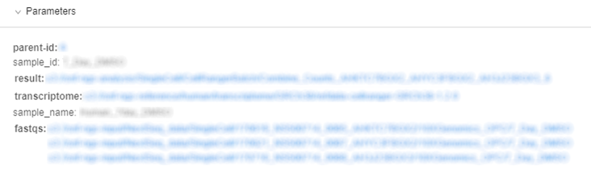
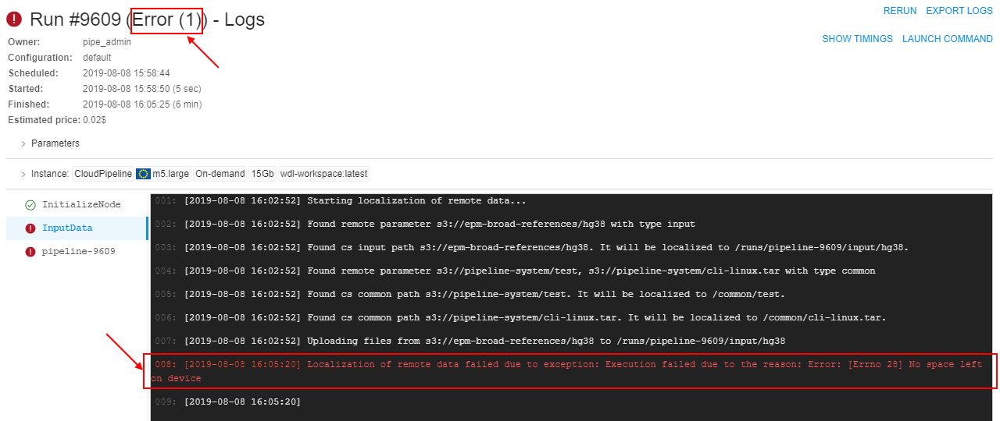

11. Manage Runs
- Overview
- ACTIVE RUNS
- COMPLETED RUNS
- Run information page
- Automatically rerun if a spot instance is terminated
Overview
"Runs" provides a list of active and completed pipeline runs. You can get parameters and logs of specific run and stop run here.
"Runs" space has two tabs:
- Active runs view
- Completed runs view.
Runs are organized in a table which is the same for both tabs:
- "State" icon - state of the run.
- Run - run ID.
- Parent run - parent run ID, if a run was launched by another run.
- Pipeline - include:
- pipeline name (upper row) - a name of a pipeline
- version name (bottom row) - a name of a pipeline version
- Docker image - a name of docker image.
- Started - time when a run was started.
- Completed - time when a run was finished.
- Elapsed - include:
- elapsed time (upper row) - a duration of a run
- estimated price (bottom row) - estimated price of run, which is calculated based on the run duration and selected instance type. This field is updated interactively (i.e. each 5 - 10 seconds).
- Owner - a user, which launched a run.
ACTIVE RUNS
This tab displays a list of all pipelines that are currently running.
Active run states
- Rotating - a run is scheduled but is waiting for a calculation node to appear.
 - now pipeline Docker image is downloaded to the node.
- now pipeline Docker image is downloaded to the node. - The pipeline is running. The node is appearing and pipeline input data is being downloaded to the node before the "InitializeEnvironment" service task appears.
- The pipeline is running. The node is appearing and pipeline input data is being downloaded to the node before the "InitializeEnvironment" service task appears.

Active run controls
| Control | Description |
|---|---|
| PAUSE/RESUME | Pauses/resumes a run. Available for on-demand instances only. Learn more about feature here. |
| STOP | This control stops a run execution. |
| LOG | To open a Run information page, press LOG button. |
COMPLETED RUNS
This tab displays a list of all pipelines runs that are already finished.

Completed run states
 - successful pipeline execution.
- successful pipeline execution. - unsuccessful pipeline execution.
- unsuccessful pipeline execution.- - a pipeline manually stopped.
Completed run controls
| Control | Description |
|---|---|
| LINKS | This control show input/output links of the pipeline |
| RERUN | This control allow rerunning of a completed run. The Launch a pipeline page will be open. |
| LOG | To open a Run information page, press LOG button. |
Run information page
Click a row within a run list, "Run information" page will appear.

It consists of several sections:
General information
This section displays general information about a run:
| Field | Description |
|---|---|
| State icon | state of the run. |
| Run ID | unique ID of the run. |
| Owner | a name of the user who started pipeline. |
| Scheduled | time when a pipeline was launched. |
| Waiting for/Running for | time a pipeline has been running. |
| Started | time when the node is initialized and a pipeline has started execution. |
| Finished | time when a pipeline finished execution. |
| Estimated price | price of a run according to a run duration and selected instance type. |
Instance
The "Instance" section lists calculation node and execution environment details that were assigned to the run when it was launched.
Note: node IP is presented as a hyperlink. Clicking it will navigate to the node details, where technical information and resources utilization is available.
Note: Docker image name link leads to a specific Tool's detail page.

Parameters
The parameters that were assigned to the run when it was launched are contained in this section.
Note: parameters with types input/output/common/path are presented as hyperlinks, and will navigate to appropriate location in a Data Storage hierarchy.

Note: if a user specifies system environment variables in parameter (e.g. RUN_ID), GUI will substitute these variables with their values automatically in the "Run information" page.
Tasks
Here you can find a list of tasks of pipeline that are being executed or already finished.
Clicking a task and its console output will be loaded in the right panel.

Console output
Console output shows console output from a whole pipeline or a selected task. It also shows a run failure cause if a run failed.

Note: the Follow log control enables auto scrolling of the console output. It is useful for logs monitoring. Follow log is enabled by default, tick the box to turn it off.
Controls
Note: Completed and active runs have different controls.
Example: controls of completed Luigi pipeline.

Here's the list of all existing buttons
| Control | Description |
|---|---|
| Stop | Allows stopping a run. |
| Show timings | Each task will show it's duration if SHOW TIMINGS mode is ON (button in the right upper corner). |
| Commit | To docker images running "sleep infinity" mode that has been changed via ssh. See 10.4. Edit a Tool. |
| GRAPH VIEW | For Luigi and WDL pipelines GRAPH VIEW is available along with a usual plain view of tasks. See 6.1.1 Building WDL pipeline with graphical PipelineBuilder. |
| SSH | Allows to shh to the instance running "sleep infinity" mode. See 6.1. Create and configure pipeline. |
| Rerun | You can rerun via RERUN button. |
| Export logs | You can export logs via EXPORT LOGS button. |
Automatically rerun if a spot instance is terminated
In certain cases - AWS may terminate a node, that is used to run a job or an interactive tool. It may be in cases:
- Spot prices changed
- AWS experienced a hardware issue
These cases aren't a Cloud Platform bug. In these cases:
- If a job fails due to server-related issue, special message is displayed, describing a reason for the hardware failure:

-
If a batch job fails due to server-related issue and AWS reports one of the following EC2 status codes:
- Server.SpotInstanceShutdown - AWS stopped a spot instance due to price changes,
- Server.SpotInstanceTermination - AWS terminated a spot instance due to price changes,
- Server.InternalError - AWS hardware issue, batch job will be restarted from scratch automatically.
Note: this behavior will occur, only if administrator applied and configured it (for more information see 12.10. Manage system-level settings.